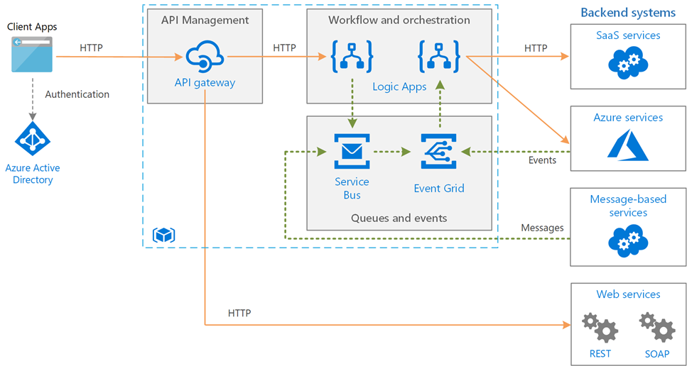

Integration Services

Agenda
Why Integration?
Azure Integration Services
API Management
Logic Apps
Service Bus
Event Grid
Why Integration?
The Challenge
- Disparate systems, apps & data sources
- Cloud, on-premises, SaaS & partner systems
- Different protocols, formats & APIs
- Need for real-time & reliable communication
The Goal
- Seamless connectivity across boundaries
- Loosely coupled, composable architectures
- Automate business processes end-to-end
- Expose & manage APIs securely
Common Integration Patterns
API-Led Connectivity
Expose services via managed APIs
Expose services via managed APIs
Workflow Orchestration
Coordinate multi-step processes
Coordinate multi-step processes
Messaging & Queuing
Decouple senders and receivers
Decouple senders and receivers
Event-Driven
React to state changes in real time
React to state changes in real time
Azure Integration Services
A unified platform for enterprise integration
Azure Integration Services
Data Factory
API Management
Logic Apps
Event Grid
Service Bus
Functions
✔
Microservice and API orchestration with
Logic Apps
✔
Create, manage, and monitor APIs with API Management
✔
Serverless compute with Functions
✔
Reliable event delivery at massive scale
with Event Grid
✔
Extract, load, transform with Data Factory
✔
Enterprise messaging with Service Bus
Azure Integration Services
API Management
Publish, secure, transform & monitor APIs
Publish, secure, transform & monitor APIs
Logic Apps
Visual workflow designer for business processes
Visual workflow designer for business processes
Service Bus
Enterprise messaging with queues & topics
Enterprise messaging with queues & topics
Event Grid
Reactive event routing at scale
Reactive event routing at scale
Azure Integration Services

API Management
The front door for your APIs
API Management
What Is It?
- Full lifecycle API management platform
- API Gateway, Developer Portal & Management Plane
- Unified entry point for internal & external consumers
Key Capabilities
- Security — OAuth, JWT, certificates, IP filtering
- Transformation — request/response rewriting
- Rate limiting & throttling policies
- Analytics & developer onboarding portal
API Management

APIM Tiers & Hosting
| Tier | Use Case | SLA | VNet |
|---|---|---|---|
| Consumption | Serverless, pay-per-call | 99.95% | — |
| Developer | Dev/test, non-production | — | ✓ |
| Basic / Standard | Production workloads | 99.95% | — |
| Premium | Enterprise, multi-region | 99.99% | ✓ |
| v2 Tiers | Next-gen with fast provisioning | 99.95%+ | ✓ |
Logic Apps
Visual workflow automation
Logic Apps
What Is It?
- Cloud-based workflow automation platform
- Visual designer — low-code / no-code
- 1400+ pre-built connectors
- Connects SaaS, on-prem & custom systems
Common Scenarios
- B2B integration (EDI, AS2, X12)
- SaaS orchestration (O365, Dynamics, SAP)
- Data transformation & routing
- Automated approval workflows
Logic Apps

Logic Apps Hosting
Consumption (Multi-tenant)
- Pay per action execution
- Visual designer in Azure portal
- Stateful workflows only
- Easiest to get started
Standard (Single-tenant)
- Runs on Azure App Service / ASE
- Stateful and stateless workflows
- VNet integration & private endpoints
- Local development with VS Code
Logic Apps Connectors
1400+ connectors for Azure services, SaaS, enterprise systems, and more
Azure Services
Blob, SQL, Service Bus, Event Grid
Blob, SQL, Service Bus, Event Grid
Enterprise
SAP, Oracle, IBM MQ, DB2
SAP, Oracle, IBM MQ, DB2
SaaS
Salesforce, O365, Dynamics, ServiceNow
Salesforce, O365, Dynamics, ServiceNow
On-Premises
Via data gateway — files, SQL, SAP
Via data gateway — files, SQL, SAP
HTTP & Custom
REST, SOAP, webhooks, custom connectors
REST, SOAP, webhooks, custom connectors
B2B / EDI
AS2, X12, EDIFACT via integration accounts
AS2, X12, EDIFACT via integration accounts
Service Bus
Enterprise-grade messaging
Service Bus
Queues
- Point-to-point messaging
- Competing consumers pattern
- FIFO with sessions
- Dead-letter queue for failures
Topics & Subscriptions
- Publish/subscribe pattern
- Multiple independent subscribers
- SQL & correlation filters
- Fan-out to different consumers
Service Bus Key Features
Peek-Lock
At-least-once delivery guarantee
At-least-once delivery guarantee
Sessions
Ordered, grouped message delivery
Ordered, grouped message delivery
Dead-Lettering
Isolate unprocessable messages
Isolate unprocessable messages
Duplicate Detection
Idempotent message handling
Idempotent message handling
Scheduled Delivery
Future-dated message processing
Future-dated message processing
Auto-Forwarding
Chain queues and topics together
Chain queues and topics together
Event Grid
Reactive, event-driven architectures
Event Grid
What Is It?
- Fully managed event routing service
- Push-based delivery to handlers
- First-class Azure service integration
- Pay per event — no idle cost
Key Concepts
- Events — what happened
- Sources — where it happened (Blob, custom, etc.)
- Topics — endpoint for ingesting events
- Subscriptions — route events to handlers
Event Grid Ecosystem
Event Sources
- Azure Blob Storage
- Resource Groups & Subscriptions
- IoT Hub, Service Bus, Event Hubs
- Custom topics (your applications)
Event Handlers
- Azure Functions
- Logic Apps
- Webhooks (any HTTP endpoint)
- Queues, Service Bus, Event Hubs
Better Together
- APIM exposes backend APIs and routes requests to Logic Apps, Functions, or direct services
- Logic Apps orchestrates multi-step workflows, using Service Bus for reliable messaging
- Service Bus decouples producers and consumers with guaranteed delivery
- Event Grid reacts to Azure and custom events, triggering Functions and Logic Apps
Example: Order Processing
Security & Governance
Managed Identity
Passwordless Azure AD auth
Passwordless Azure AD auth
VNet Integration
Private endpoints & network isolation
Private endpoints & network isolation
Key Vault
Secrets & certificate management
Secrets & certificate management
Azure Policy
Enforce compliance at scale
Enforce compliance at scale
Azure Monitor
Logging, metrics & alerts
Logging, metrics & alerts
RBAC
Fine-grained access control
Fine-grained access control
Key Takeaways
- API Management — the front door: publish, secure & monitor APIs
- Logic Apps — visual workflow orchestration with 1000+ connectors
- Service Bus — reliable enterprise messaging (queues & topics)
- Event Grid — reactive event routing at cloud scale
- Better together — compose services to build end-to-end integrations
Hands-On Lab
Publish, secure & test APIs with Azure API Management
Objectives
- Create an Azure API Management instance
- Import & publish backend APIs (manual & OpenAPI)
- Test API operations from the APIM Test console
- Explore rate-limiting & quota policies
- Apply inbound policies to strip headers
Prerequisites
- Access to an Azure subscription & resource group
Questions?
Thank you!